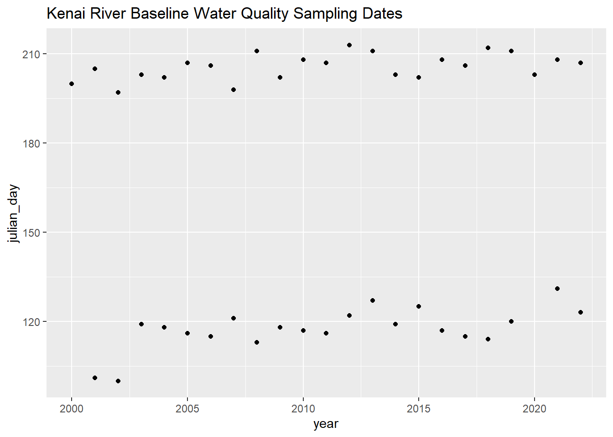

Sample event timing for spring and summer events must be chosen with care each year. Sample date occurs on Tuesdays traditionally, and dates must be chosen such that the tide is incoming early in the morning.
Note: these CSV files are excluded from the GitHub repository because they are too large to sync. To reproduce the analysis, download and save these files locally instead. (See the ReadMe file at data/WQX_downloads in the repository).
Using these same queries in the future will download the most current csv files.
B.1.1 Import data
Import data from local csv files
Show the code
# read in table of known dates from Guerron Orejuela 2016krbwqm_dates <-read_excel("other/input/sample_dates_tides.xlsx") %>%rename(activity_start_date = date) %>%transform(time_max_tide =as.hms(time_max_tide),time_min_tide =as.hms(time_min_tide)) %>%select(-data_entry,-link,-sample_date_source,-tide_source) %>%mutate(julian_day =yday(activity_start_date),year =year(activity_start_date))z <- krbwqm_dates %>%arrange(season,julian_day)
B.2 Dates
Show the code
# dot plotkrbwqm_dates %>%ggplot(aes(year,julian_day)) +geom_point() +ggtitle("Kenai River Baseline Water Quality Sampling Dates")

Show the code
# calculate spring and summer average dayskrbwqm_dates %>%distinct(julian_day,season,year) %>%group_by(season) %>%summarise(avg_date =format(as.Date(round(mean(julian_day)), origin =as.Date("2024-01-01")), "%m-%d"),stdev =round(sd(julian_day)),n_years =n(),min_year =min(year),max_year =max(year))
---execute: echo: falsedate: "`r Sys.Date()`"format: html: code-fold: true code-tools: true code-summary: "Show the code"---# Appendix: Sample Event Timing## IntroductionSample event timing for spring and summer events must be chosen with care each year. Sample date occurs on Tuesdays traditionally, and dates must be chosen such that the tide is incoming early in the morning.```{r setup, include=FALSE}knitr::opts_chunk$set(echo = TRUE, warning = F, message = F)# clear environmentrm(list=ls())# load packageslibrary(tidyverse)library(lubridate)library(readr)library(readxl)library(writexl)library(hms)library(plotly)library(DT)#library(xlsx)library(readxl)library(openxlsx)library(leaflet)library(DT)library(ggpubr)library(plotrix)library(remotes)library(janitor)#install_github("USGS-R/EGRET")select <- dplyr::select# set plotting themes## geom_col plots themecol_theme <- theme(axis.title = element_text(size = 14, face = "bold"), strip.text = element_text(size = 14, face = "bold"), legend.title = element_text(size = 14, face = "bold"), legend.text = element_text(size = 14), axis.text = element_text(size = 14))## geom_points plots themepoints_theme <- theme(axis.title = element_text(size = 14, face = "bold"), strip.text = element_text(size = 14, face = "bold"), legend.title = element_text(size = 14, face = "bold"), legend.text = element_text(size = 14), axis.text = element_text(size = 14), title = element_text(size = 18))# function to exclude multiple items per column'%ni%' <- Negate('%in%')```<br><br>##### Notes on data sourcingData is sourced from the following queries at <https://waterqualitydata.us> on Feb 24, 2021:CSV download for [sample]{.underline} data: <https://www.waterqualitydata.us/portal/#bBox=-151.322501%2C60.274310%2C-149.216144%2C60.738915&mimeType=csv&dataProfile=narrowResult>CSV download for [site]{.underline} data: <https://www.waterqualitydata.us/portal/#countrycode=US&statecode=US%3A02&countycode=US%3A02%3A122&bBox=-151.322501%2C60.274310%2C-149.216144%2C60.738915&mimeType=csv>Note: these CSV files are excluded from the GitHub repository because they are too large to sync. To reproduce the analysis, download and save these files locally instead. (See the ReadMe file at data/WQX_downloads in the repository).Using these same queries in the future will download the most current csv files.<br>------------------------------------------------------------------------<br>### Import dataImport data from local csv files```{r}# read in table of known dates from Guerron Orejuela 2016krbwqm_dates <-read_excel("other/input/sample_dates_tides.xlsx") %>%rename(activity_start_date = date) %>%transform(time_max_tide =as.hms(time_max_tide),time_min_tide =as.hms(time_min_tide)) %>%select(-data_entry,-link,-sample_date_source,-tide_source) %>%mutate(julian_day =yday(activity_start_date),year =year(activity_start_date))z <- krbwqm_dates %>%arrange(season,julian_day)```## Dates```{r}# dot plotkrbwqm_dates %>%ggplot(aes(year,julian_day)) +geom_point() +ggtitle("Kenai River Baseline Water Quality Sampling Dates")# calculate spring and summer average dayskrbwqm_dates %>%distinct(julian_day,season,year) %>%group_by(season) %>%summarise(avg_date =format(as.Date(round(mean(julian_day)), origin =as.Date("2024-01-01")), "%m-%d"),stdev =round(sd(julian_day)),n_years =n(),min_year =min(year),max_year =max(year))```<br>## Time of Day```{r}# dot plotkrbwqm_dates %>%ggplot(aes(year,time_max_tide)) +geom_point() +facet_grid(.~season) +ggtitle("Kenai River Baseline Water Quality Sampling Times\nHigh Tides")krbwqm_dates %>%ggplot(aes(year,time_min_tide)) +geom_point() +facet_grid(.~season) +ggtitle("Kenai River Baseline Water Quality Sampling Times\nLow Tides")# calculate spring and summer average dayskrbwqm_dates %>%distinct(julian_day,season,year) %>%group_by(season) %>%summarise(avg_date =format(as.Date(round(mean(julian_day)), origin =as.Date("2024-01-01")), "%m-%d"),stdev =round(sd(julian_day)),n_years =n(),min_year =min(year),max_year =max(year))``````{r echo = F}knitr::knit_exit()``````{r, echo = F, cache = TRUE, eval = F}# read in tide records; slow, time consuming (~5 min)#library(rtide)#tide_records <- tide_height(# stations = "Nikiski", # minutes = 60L, # from = as.Date("2000-01-01"), # to = as.Date(Sys.Date()), # tz = "UTC", # harmonics = rtide::harmonics# )# calculate min and max daily tides# high and low tides will be rounded to nearest hour\# # thought: would be a good idea to stick with using rtides package in case we wwant to match sample time w/ tide heigt in the future#z <- tide_records %>%# mutate(date = date(DateTime),# time = hms(DateTime)) %>%# group_by(date,time) %>%# summarise(min_tide = min(TideHeight))```delete below here??<br>How many years of Kenai Watershed Forum data do we have in the waterqualitydata.us database?```{r}t <- dat %>%filter(OrganizationFormalName =="Kenai Watershed Forum(Volunteer)*") %>%filter(!is.na(ActivityStartDate)) %>%summarise(min_date =min(date(ActivityStartDate)),max_date =max(date(ActivityStartDate)))datatable(t)```<br>[**It appears that data after spring 2013 is not in the EPA database.**]{.underline} (Confirmed w/ ADEC in spring 2021).Temporary solution - use data compiled from PDFs on the KWF local server.Import data from local KWF server:```{r}# import compiled data 2014 - 2020 form local kwf server# note: we will not need this step once everything's uploaded to WQXkwf_dat <-read_excel("data/Compiled_KRBWQM_data_2014_2020.xlsx", sheet ="Master") %>%select(-Year,-Season,-ChannelType,-TestType,-Code,-Duplicate,-Lab) %>%# create and rename columns to match EPA database formatmutate("OrganizationFormalName"="Kenai Watershed Forum(Volunteer)*","MonitoringLocationTypeName"="River/Stream") %>%rename("ActivityStartDate"="Date","MonitoringLocationName"="Site","CharacteristicName"="Parameter","ResultMeasureValue"="Result","ResultMeasure/MeasureUnitCode"="Units") %>%# match column formats to EPA databasetransform(ResultMeasureValue =as.double(ResultMeasureValue))# join site coordinates to 2014-2020 datasites <-read.csv("data/sampling_sites/site_names_matching.csv") %>%rename("MonitoringLocationName"="name_2014_2020")kwf_dat <-left_join(kwf_dat,sites)# join kwf and epa datadat <-bind_rows(dat,kwf_dat)```<br>What kind of sites are present in our data set?```{r}t <-data.frame(unique(dat$MonitoringLocationTypeName))datatable(t)```<br>Retain surface water sites only. Exclude well sampling sites.```{r}# create and apply filtersurface <-c("River/Stream","Lake","River/Stream Perennial","BEACH Program Site-Ocean","BEACH Program Site-River/Stream","Lake, Reservoir, Impoundment","Stream","Spring")dat <- dat %>%filter(MonitoringLocationTypeName %in% surface)```<br>Retain a subset of useful columns```{r}# retain select subset of potentially useful columnsdat <- dat %>%select("OrganizationFormalName","ActivityStartDate" ,"ActivityStartTime/Time","ActivityStartTime/TimeZoneCode" , "MonitoringLocationIdentifier" , "CharacteristicName" , "ResultMeasureValue" , "ResultMeasure/MeasureUnitCode" , "ResultStatusIdentifier" , "ResultValueTypeName" , "ResultAnalyticalMethod/MethodIdentifier" ,"ResultAnalyticalMethod/MethodIdentifierContext","ResultAnalyticalMethod/MethodName" , "MonitoringLocationName" , "MonitoringLocationTypeName" , "HUCEightDigitCode" , "DrainageAreaMeasure/MeasureValue" , "DrainageAreaMeasure/MeasureUnitCode" , "LatitudeMeasure" , "LongitudeMeasure" , "SourceMapScaleNumeric" , "HorizontalAccuracyMeasure/MeasureValue" ,"HorizontalAccuracyMeasure/MeasureUnitCode" ,"HorizontalCollectionMethodName" , "HorizontalCoordinateReferenceSystemDatumName" ,"VerticalMeasure/MeasureValue" , "VerticalMeasure/MeasureUnitCode" , "VerticalAccuracyMeasure/MeasureValue" , "VerticalAccuracyMeasure/MeasureUnitCode" , "VerticalCollectionMethodName" , "VerticalCoordinateReferenceSystemDatumName") # remove extraneous text from "Kenai Watershed Forum(Volunteer)*"dat <- dat %>%mutate(OrganizationFormalName =gsub("\\s*\\([^\\)]+\\)","",as.character(dat$OrganizationFormalName))) %>%mutate(OrganizationFormalName =str_remove(OrganizationFormalName,"\\*"))# to do: adapt vignette for multiple sites:# https://github.com/USGS-R/EGRET# potentially also useful: https://waterdata.usgs.gov/nwis/inventory?search_criteria=lat_long_bounding_box&submitted_form=introduction# additional dataframe prepdat <- dat %>%transform(ActivityStartDate =date(ActivityStartDate)) %>%# remove missing observationsfilter(!is.na(ResultMeasureValue))```<br>------------------------------------------------------------------------### Exploratory Data AnalysisNow, how many years of data do we have, including from the waterqualitydata.us database AND the KWF local server?```{r}dat %>%filter(OrganizationFormalName =="Kenai Watershed Forum") %>%summarise(min_date =min(ActivityStartDate),max_date =max(ActivityStartDate))```<br>How many data points total from water quality grab samples?```{r}exclude_parameters <-c("Temperature, air", "Temperature, water")(z <- dat %>%filter(OrganizationFormalName =="Kenai Watershed Forum", CharacteristicName %ni% exclude_parameters) %>%distinct() %>%count())```<br>How many different kinds of substances have we measured ?```{r}dat %>%filter(OrganizationFormalName =="Kenai Watershed Forum") %>%distinct(CharacteristicName) %>%count()# note: some substances are labeled "(surr)" for surrogate. Need to research what this means; subtract form total count for now```<br>What are the names of all of substances have we measured ?```{r}param <- dat %>%filter(OrganizationFormalName =="Kenai Watershed Forum") %>%distinct(CharacteristicName) datatable(param)```<br>Create and export table of site names```{r}# create summary tabletbl <- dat %>%filter(OrganizationFormalName =="Kenai Watershed Forum", CharacteristicName %ni% exclude_parameters) %>%group_by(MonitoringLocationName,LatitudeMeasure,LongitudeMeasure) %>%summarise(min_date =min(ActivityStartDate),max_date =max(ActivityStartDate)) %>%rename("latitude"="LatitudeMeasure","longitude"="LongitudeMeasure")# export csvwrite.csv(tbl,"data/sampling_sites/2000_2014_sitenames.csv", row.names = F)```